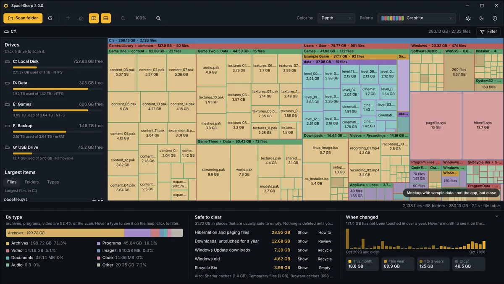
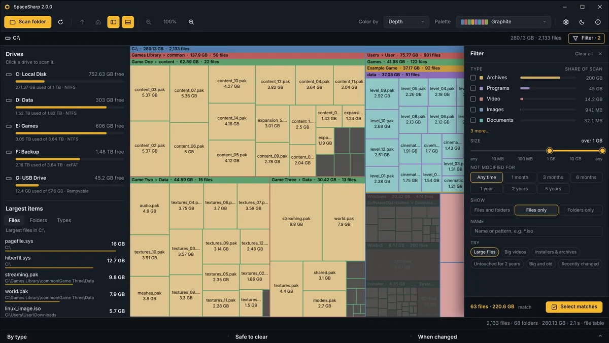
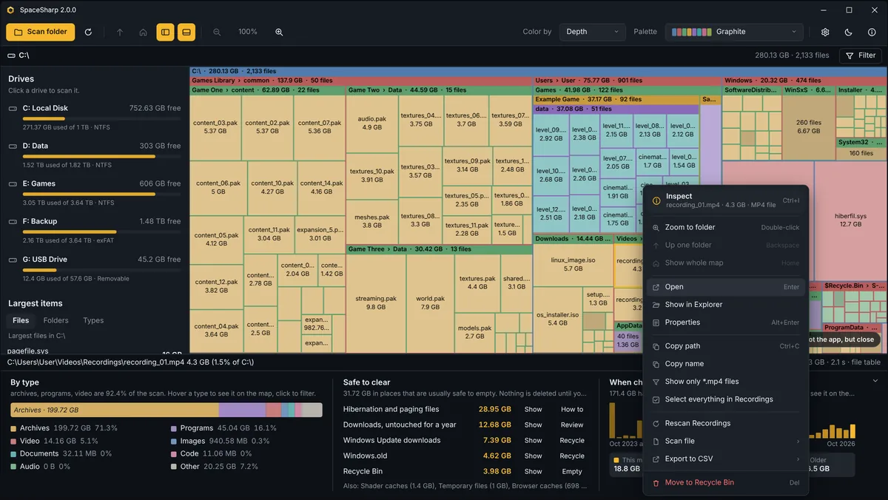
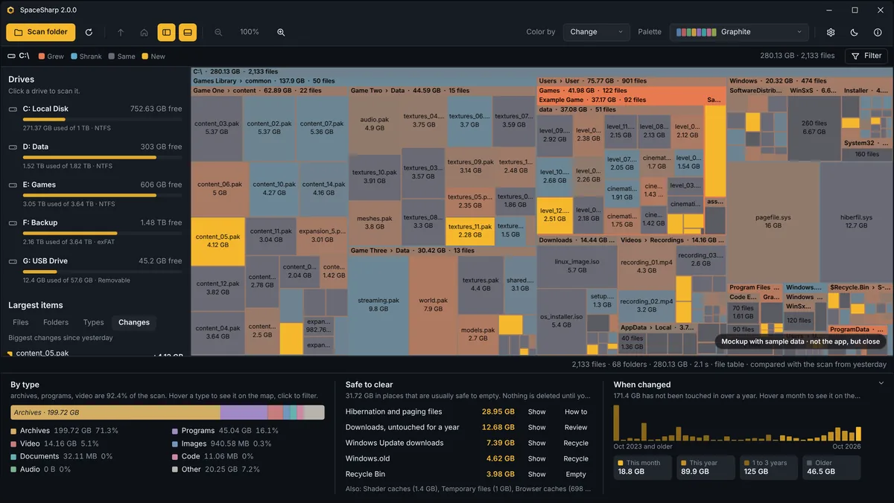
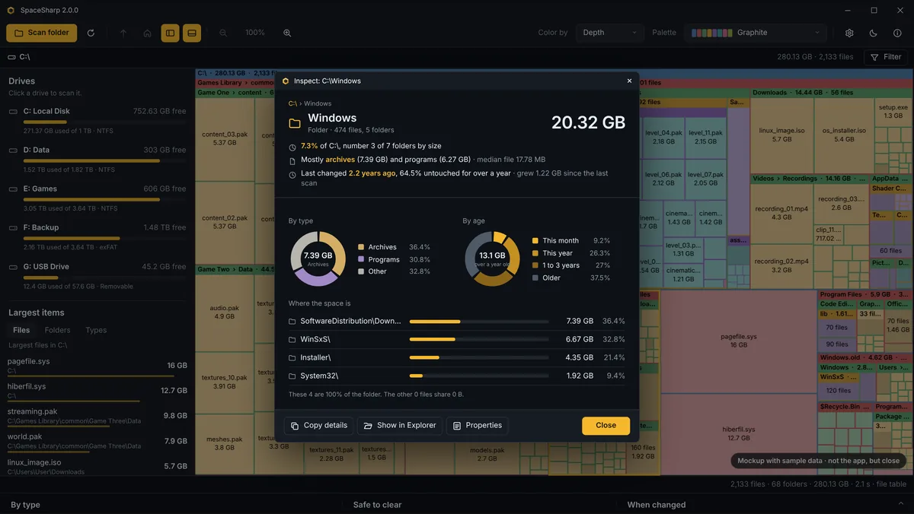
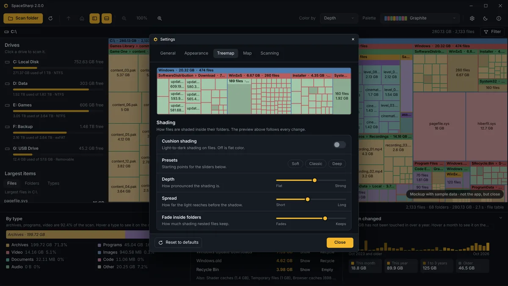
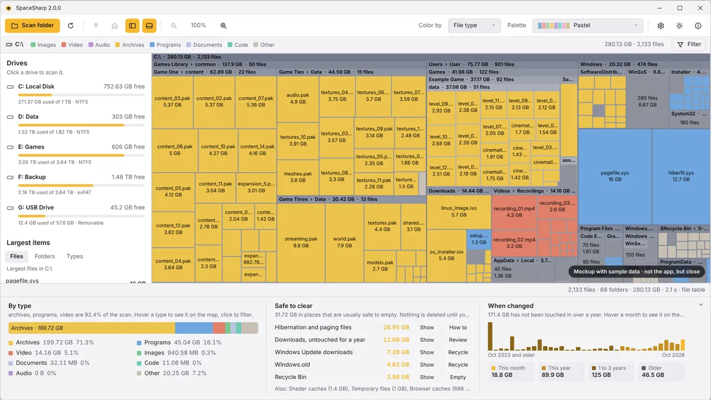
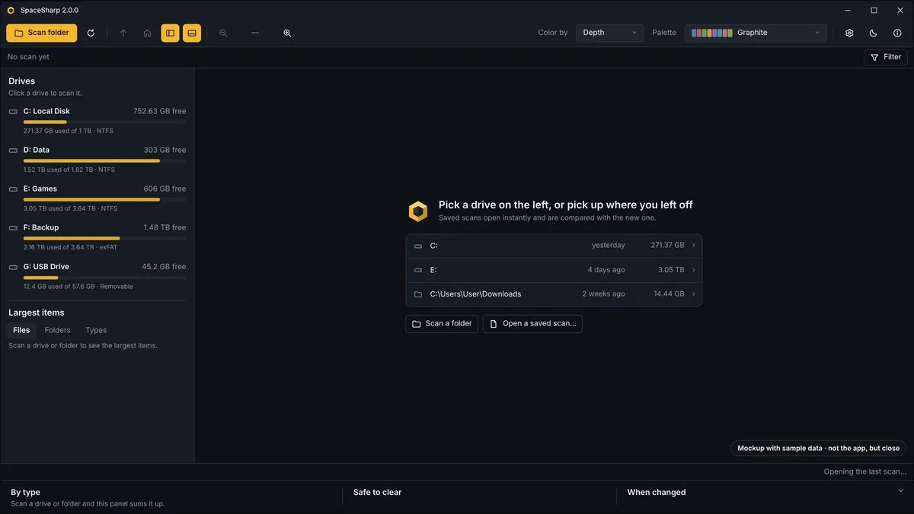

A zoomable map of your drives for Windows. Every file and folder is a box sized by the space it uses. Fly into folders, filter in plain words, and clean up right from the map.
Free and open source, MIT license. Windows 10 and 11, 64-bit. No account, no telemetry, nothing installed unless you pick the installer. The window below is the real interface drawn in your browser with sample data: hover it, click it, switch scenes.The pictures below are the real interface with sample data; swipe through them.
Try it: hover the map for the status line, click a box to select it. Names are sample data.








Tap a picture to see it full size. Names are sample data.
One map instead of six styles, a filter you can see, and a panel that says what is safe to clear. The full changelog has the rest.
Folders are frames with a title bar, files are cushioned boxes, a one-pixel grid between them. Shading depth, where the light comes from, title bar tint and padding, and the text colors are sliders in Settings with a live preview. Fifteen palettes, split by theme.
See the shading settings →File types as rows with a share bar, size and age controls, Files or Folders, and presets like Large files and Untouched for 2 years. The map dims to the matches as you change it. Prefer one row of pills under the path? That is a setting.
Open the drawer →Space by file type as one bar. Places that are usually safe to empty, each with Show and a one-click action. A histogram of when files were last changed, with the old stuff a click away. Hover any of it to see it on the map.
Show the panel →The whole drive is one map. The biggest things are the biggest boxes, and you fly into them.
As administrator, SpaceSharp reads the NTFS file table instead of walking every folder, so a million files are mapped in a few seconds. Folders and other file systems use a parallel walk.
Double-click a folder and the map zooms until it fills the window. Wheel to zoom around the cursor, drag to pan, Backspace to go up. Small files gather into one box until you are close enough to see them.
Type videos over 500MB older than 1 year or *.iso, or set it in the drawer. Everything else dims and the layout stays put. Select every match, then delete them together.
Ctrl+I on a file, folder or selection: size and share, the five largest things anywhere inside, donuts by type and by age, and a callout when one thing holds most of the space.
Every scan is saved. The app opens with yesterday's map, and a Change color mode shows what grew, shrank or appeared since. Old saves clean themselves up.
Right-click for Open, Show in Explorer, Properties, copy, filter to this type, select the whole folder, or move to the Recycle Bin. The map updates without a rescan.
Each top-level folder gets a hue and everything inside keeps it, a step lighter per level. Or color by depth, by file type with a legend, or by change.
A side panel lists every drive with usage bars, and the largest files, folders and types of the current scan. Click a drive to scan it.
SpaceSharp.exe D:\ scans straight away, a saved scan opens from the command line, and "Scan with SpaceSharp" can sit in Explorer's right-click menu. English and Norwegian.
They all read the same disk. The difference is what you can do once you see it.
| Feature | SpaceSharp | WizTree | WinDirStat | SpaceMonger |
|---|---|---|---|---|
| Reads the NTFS file table for fast scans | Yes, as administrator | Yes | No | No |
| Zoomable map you fly into | Yes | No | No | Yes |
| Filter in plain words | Yes | Name search | No | No |
| Says what is safe to clear | Yes | No | No | No |
| Hierarchy shown by color | Yes | By type | By type | By depth |
| Inspect with shares, type and age breakdown | Yes | Basic | Basic | No |
| Delete from the map | Recycle Bin | Yes | Yes | Yes |
| Dark mode | Yes | No | No | No |
| Saves scans and shows what changed | Yes | Export only | No | No |
| Open source | MIT | No | GPL | Abandoned |
| Price | Free | Free for home use | Free | Was paid |
As of October 2026, from each product's own documentation. Corrections welcome on GitHub.
One file if you want nothing installed. An installer if you want updates to arrive on their own.SpaceSharp runs on Windows 10 and 11. Pick the file on the PC: an installer, a one-click setup, or a single portable exe.
You are on a phone. SpaceSharp is a Windows app, so the downloads are on the PC. Send yourself the link and open it there.
Choose the folder, install for you or for everyone, and get updates automatically. The one most people want.
Download the installerInstalls to your profile without asking anything and without admin rights. Updates itself.
Download Setup.exeOne file, no install, no admin, no updates. The simplest thing that works.
Download the exe32-bit Windows: SpaceSharp-win-x86-Setup.exe, SpaceSharp-win-x86.msi or SpaceSharp-win-x86.exe. The exe is not code-signed, so SmartScreen may ask once; choose More info, then Run anyway. Every release with notes is on GitHub Releases.
The short answers. The README on GitHub has the long ones.
No telemetry, no accounts, no network use except the update check, which only asks GitHub for the latest release and only when you installed with the installer. The source is public and the release assets are built from it.
Reading the NTFS file table means opening the drive itself rather than its folders, and Windows only allows that for administrators. SpaceSharp asks once through the normal Windows prompt, a small elevated helper reads the table and hands the map back, and the helper exits. Say no and the normal scan runs instead.
It looks at names only: Windows.old, the Recycle Bin, Temp folders, package caches, browser and shader caches, Windows Update downloads, and Downloads not touched in a year. Show selects them on the map; Recycle sends them to the Recycle Bin after the usual confirmation; Empty empties the bin through Windows; Review selects old downloads so you decide. Hibernation and paging files get a How to, never a button.
Files go to the Recycle Bin, never straight to deletion, and the map updates to show the space as free. Protected system folders are read-only unless you run as administrator, and even then the app never touches files by itself.
The map counts file contents. Explorer's used space also includes the file system's own structures, shadow copies and space reserved by Windows. Hard-linked data such as WinSxS can be counted once here, which Explorer's folder sizes do not do.
The six styles were replaced by one look with sliders: cushion shading on or off, Depth, Spread, Tone, Fade inside folders, the light direction, title bar tint and padding, the grid, and the text colors. Cushion shading off with the grid on is close to the old Flat; the Classic preset is the old Classic look.
In your profile's local app data, one file per drive plus the previous one for comparison. Settings › Scanning sets how long they are kept, deletes them all in one click, and can stop the last scan from reopening at startup.
Windows 10 or 11. The downloads above are 64-bit; 32-bit Windows has its own three files on the release page. The portable exe and the installer both carry their own .NET runtime, so nothing else needs installing.